Lençóis ist ein niedliches Dorf, das idyllisch zwischen Wäldern und Hügeln an einem Fluss liegt. Die Stadt ist im Diamantenfieber entstanden, das der Gegend Chapada Diamantina den Namen gegeben hat. Bis auf die Autos und unvermeidlichen gelben Plastikstühle sieht hier vieles noch aus wie vor 100 Jahren. In den schönen alten Häusern reiht sich ein Restaurant ans nächste, von denen viele sehr schön aufgemacht sind und manche sogar lecker kochen.
Wir sind in der Pousada Vila Serrano untergekommen. Das Hotel ist liebevoll angelegt und liegt in einem tropischen Garten. Die Gästezimmer sind wie eine kleine Straße aus dem Dorf alle mit unterschiedlichen Fassaden ausgestattet. Das Frühstück ist exzellent, insbesondere das selbst gebackene Brot.
Uns haben die Tafelberge und Wasserfälle in die Gegend gezogen. Daher haben wir den verbleibenden Nachmittag gleich für einen Abstecher zum Flüsschen genutzt. Auch hier ist Wasser knapp, so dass man das Flussbett hinauf kraxeln konnte. Auf den großen Steinen wird Wäsche zum Trocknen ausgelegt und in den Tümpeln baden Familien.
Unser erster Ausflug mit Führer ging zum Rio Sossego. Das Tal beginnt gleich hinter dem Ort. Von da an geht es zwei Stunden über dicke Steine durch das Flussbett bis zu einem schönen Wasserfall. Dort konnten wir uns von der Hitze abkühlen und baden. Auf dem Rückweg sind wir an der beliebtesten Badestelle, dem Ribeirão do Meio vorbeigekommen. Der Fluss hat eine glatte Fläche abgeschmirgelt, die man als Rutsche nutzen kann. Bei den einheimischen Profis hat das einfacher ausgesehen als es war. Eine Badehose kann ganz schön bremsen. Hierher sind wir Tags darauf zurückgekommen um zur Abwechslung mal einen entspannten Tag zu verbringen.
Die "Basic-Tour", die hier gerne angeboten wird, hat sich als schlimmes Touri-Programm entpuppt. Der obligatorische Badestopp beim Paco do diablo war noch ganz nett. Dann fingen allerdings die Höhlen an - riesige, langweilige Höhle, in der natürlich ganz viele Stalaktiten wie Dinosaurier oder die Mutter Maria aussehen. Nach einem ünerflüssigem Stopp in einem Grütze-Freibad (mit noch mehr albernen Höhlen) konnten wir endlich zur Hauptattraktion: Nach einem kurzen Aufstieg auf den Tafelberg Pai Inacio konnten wir einen wahnsinnigen Ausblick über die ganze Landschaft mit ihren zahlreichen Tafelbergen genießen.
Am Heiligabend haben wir eine Wanderung durchs Vale do Capão organisiert. Auf dem Pfad zwischen den Tafelbergen waren kaum Leute unterwegs. Unser Gruppe hat sich allerdings ein Irrer angeschlossen, der aus "meditativen Gründen", wie er sagte, keine Schuhe trug. Der brennend heiße Sand hat ihn hier auf eine harte Probe gestellt. Er hat aber gemogelt, indem er immer gerannt ist um an schattigen Stellen zu pausieren.
Die seichten Hügel zwischen den steil aufragenden Tafelbergen sind mit einer wunderschönen Heideflora bewachsen. Auf halbem Weg gibt es einen Stopp an der kleinen "Oase" Aguas Claras. Hier ist ein Riss im Boden, aus dem frisches Wasser sprudelt und sich in mehrere kleine Becken ergießt, die von Farnen gesäumt sind. Ein paradiesischer Ort für ein Bad. Mit dem Blick durch das Tal, wenn die Sonne am Nachmittag langsam sinkt, ist das einer der schönsten Ausflüge, die Lençóis bietet.
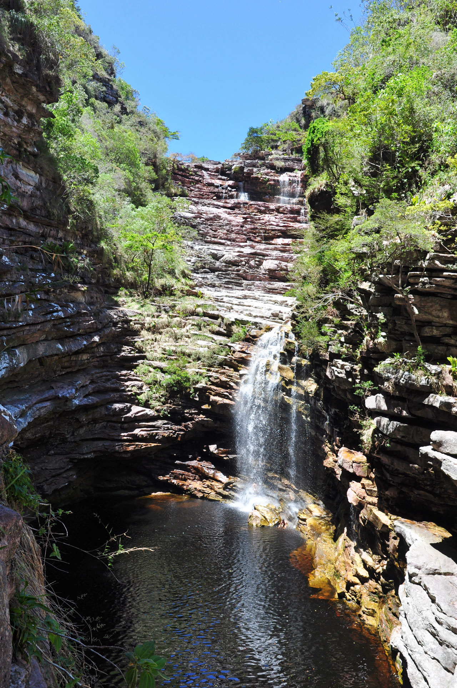
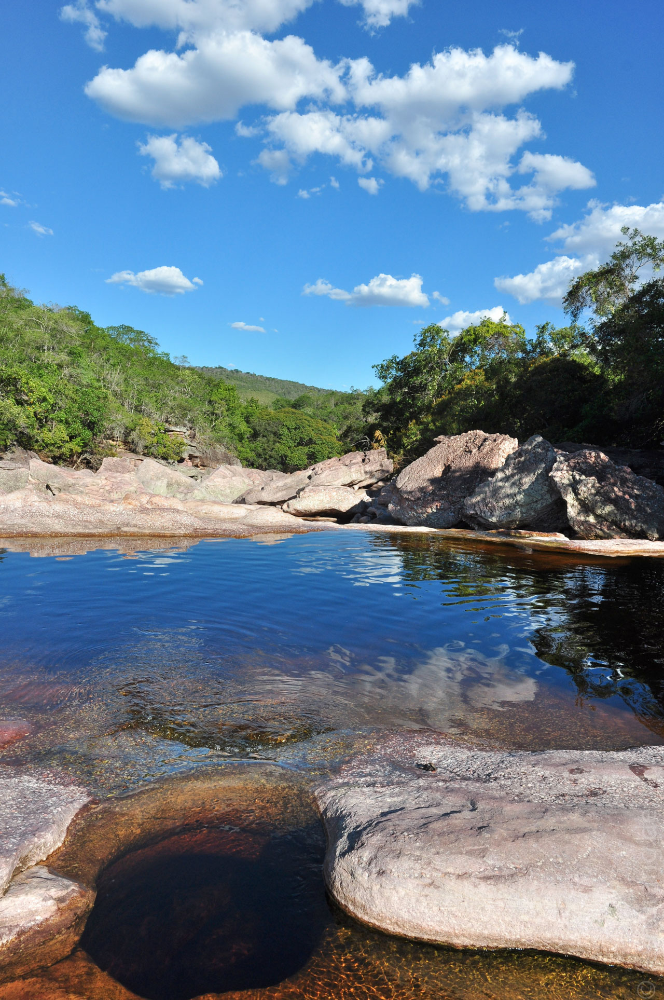
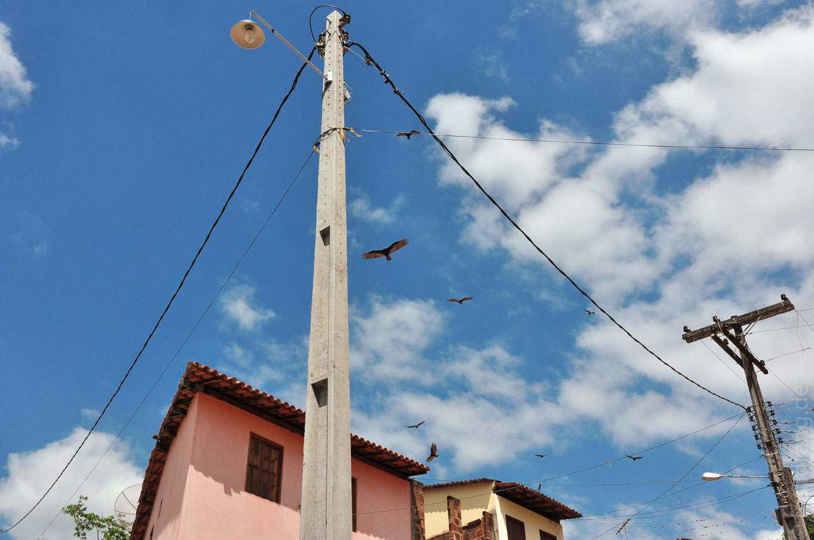
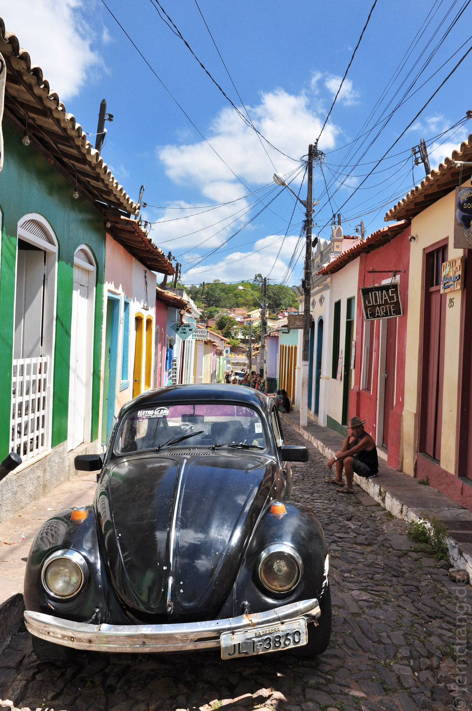
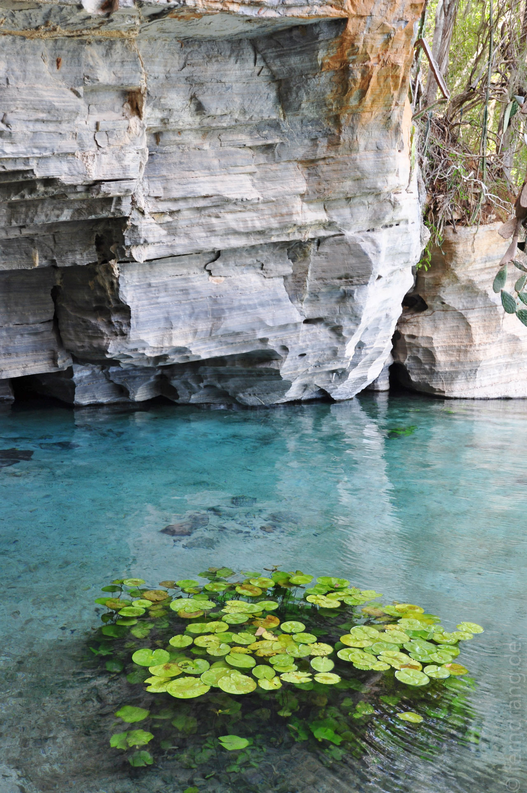
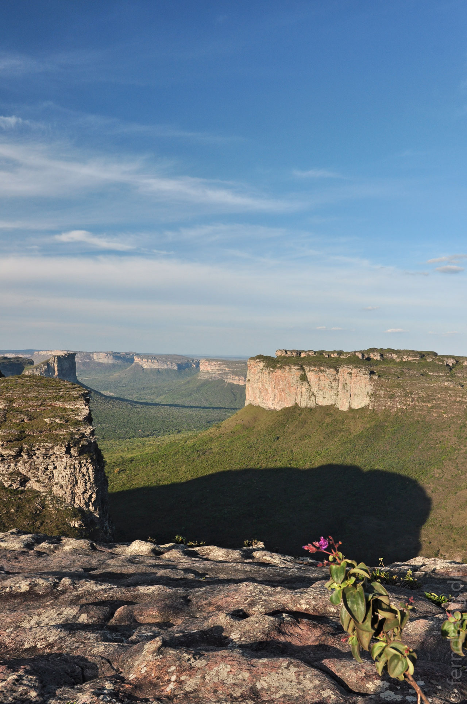
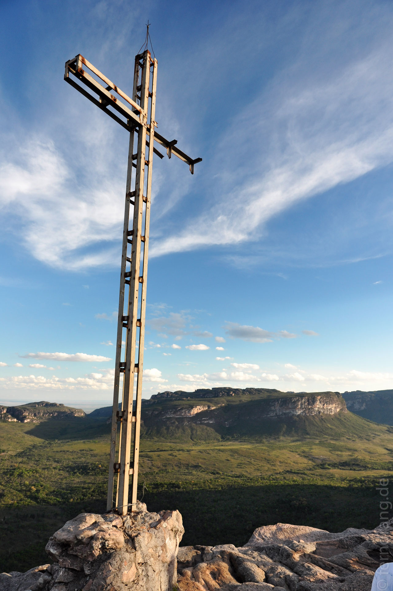
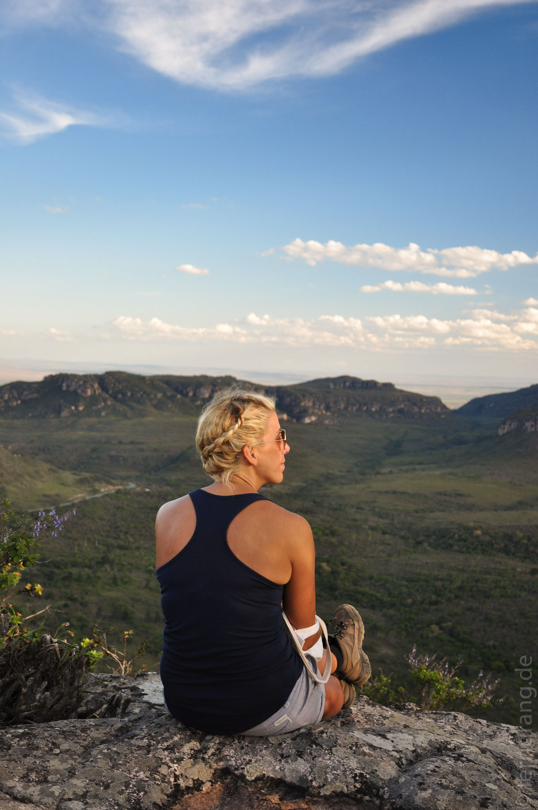
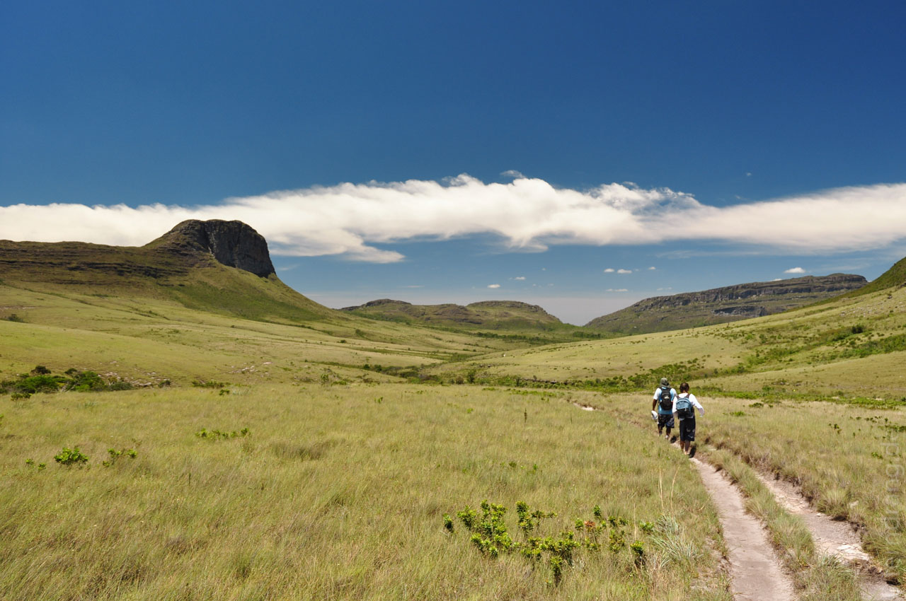
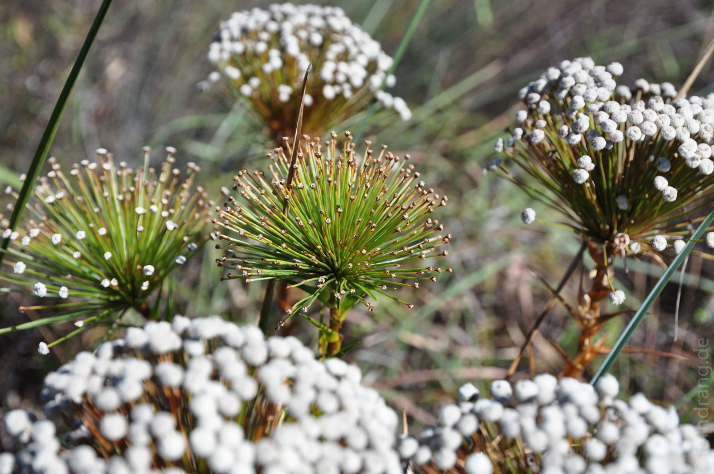
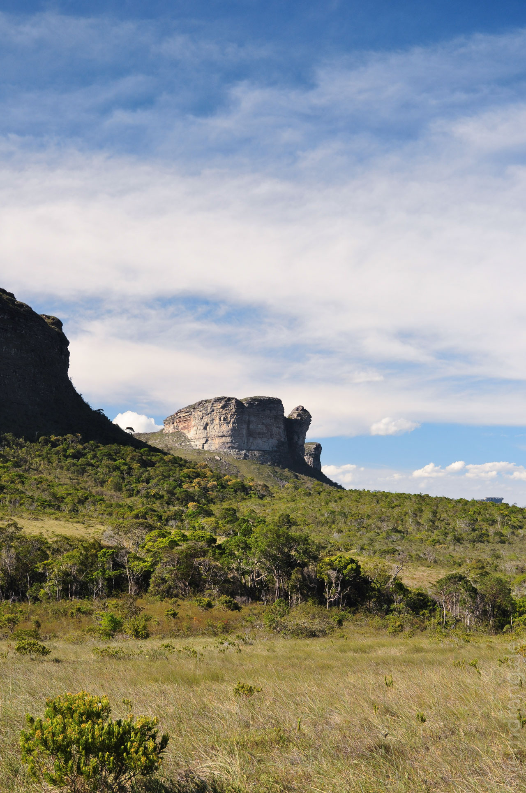
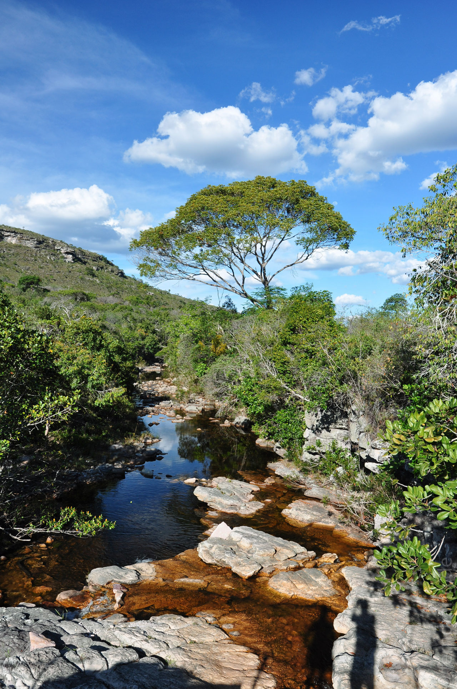